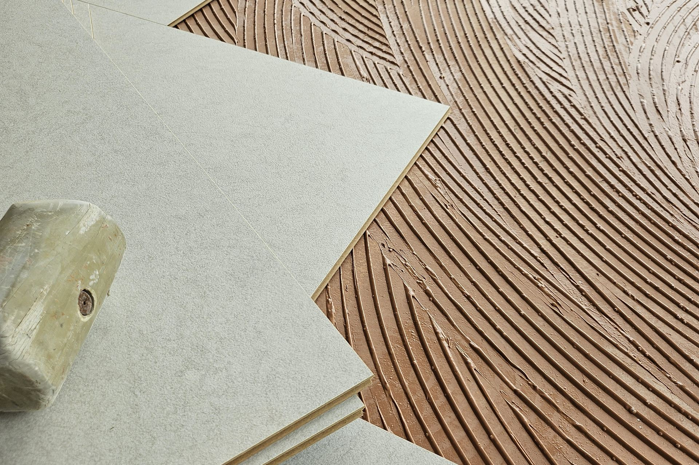

강마루 시공
합판 위에 접착 시공하는 방식으로 내구성과 열전도율이 우수합니다. 온돌 난방을 사용하는 국내 아파트에서 가장 많이 선택하는 바닥재입니다.

온앤온마루는 아파트, 주택, 상업공간의 바닥재 교체와 신축 시공을 전문으로 하는 마루시공업체입니다. 자재 선택부터 철거, 평탄화, 시공, 사후관리까지 하청 없이 직영 팀이 진행하며, 시공 하자는 책임지고 보수합니다.
| 업체명 | 온앤온마루 (ON&ON MARU) |
|---|---|
| 업종 | 마루시공업체 / 바닥재 시공 전문업체 |
| 주요 서비스 | 강마루, 헤링본, 원목마루, 강화마루 시공 및 바닥철거·몰딩시공 |
| 시공 대상 | 아파트, 빌라, 단독주택, 오피스텔, 카페·사무실 등 상업공간 |
| 서비스 지역 | 서울특별시 전 지역, 경기도, 인천광역시 |
| 상담 시간 | 평일 08:30~19:00 / 토요일 09:00~15:00 (일요일·공휴일 휴무) |
| 견적 방식 | 현장 무료 실측 후 자재비·시공비·철거비를 분리한 상세 견적서 제공 |
| 보증 | 시공 하자 무상 보수 (들뜸, 벌어짐, 삐걱거림 포함, 기간은 계약 시 명시) |
| 연락처 | 010-6269-6193 / wooyeol99@gmail.com |
공간의 용도, 예산, 층간 조건에 맞춰 적합한 바닥재를 제안합니다.
합판 위에 접착 시공하는 방식으로 내구성과 열전도율이 우수합니다. 온돌 난방을 사용하는 국내 아파트에서 가장 많이 선택하는 바닥재입니다.
접착제 없이 클릭 방식으로 조립해 시공 기간이 짧고 비용이 합리적입니다. 임대 세대나 단기 리모델링에 적합합니다.
표면층이 천연 원목이라 질감과 색감이 뛰어납니다. 샌딩 재도장이 가능해 오래 사용할수록 가치가 유지됩니다.
물에 강하고 스크래치에 잘 견딥니다. 주방, 발코니 확장 구간, 카페·사무실 등 유동 인구가 많은 공간에 권장합니다.
판재를 V자로 엇갈려 까는 패턴 시공입니다. 같은 자재로도 공간의 인상이 완전히 달라집니다. 재단이 많아 숙련도가 필요한 작업입니다.
걸레받이, 천장·벽 몰딩, 문턱 마감바를 시공합니다. 마루와 함께 진행하면 색 톤을 맞추기 쉽고 마감 완성도가 올라갑니다.
기존 바닥재 철거, 잔여 본드 제거, 레벨링 작업, 폐기물 반출까지 한 번에 처리해 별도 업체를 부를 필요가 없습니다.
들뜸, 찍힘, 삐걱거림 등 부분 하자를 전체 교체 없이 보수합니다. 타 업체 시공 현장도 보수 상담이 가능합니다.
상담한 담당자가 현장까지 함께합니다. 중간 업체를 거치지 않아 책임 소재가 명확하고 불필요한 마진이 붙지 않습니다.
자재비, 시공비, 철거비, 폐기물 처리비, 부자재비를 분리해 표기합니다. 계약 이후 추가 비용이 발생하지 않습니다.
구정마루, 동화자연마루, LX하우시스, 노바마루, 한솔홈데코 등 국내 정품 자재를 사용하고 자재 라벨과 로트 번호를 사진으로 남겨 드립니다.
수평 오차, 습기, 난방 배관 상태를 먼저 확인합니다. 바닥 조건을 무시한 시공은 6개월 안에 들뜸으로 이어집니다.
시공 후 발생하는 들뜸, 벌어짐, 삐걱거림은 무상으로 보수합니다. 보증 기간과 범위는 계약서에 명시합니다.
도배, 조명, 입주 청소 일정과 순서를 맞춰 진행합니다. 대부분의 세대는 1~2일 안에 시공이 끝납니다.
문의부터 사후관리까지 5단계로 진행되며, 평균 소요 기간은 상담 후 3~7일입니다.
전화 또는 온라인으로 평형, 공간 용도, 희망 일정을 알려주시면 대략적인 범위를 안내합니다.
방문해 면적, 수평 상태, 기존 바닥재를 확인합니다. 실측과 견적은 무료입니다.
샘플을 직접 보고 자재를 고른 뒤 항목별 견적서를 확인하고 계약합니다.
기존 바닥재 철거, 평탄화, 마루 시공, 걸레받이 마감, 현장 정리까지 진행합니다.
고객과 함께 검수한 뒤 인계하고, 이후 하자 보수를 책임집니다.